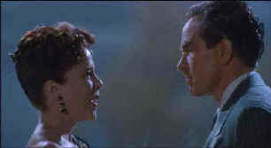

| Bugsy/A-,A |
|
Columbia/1991/136m/WS 1.85 |
Bugsy is beautiful. Beautiful people. Beautiful sets. Beautiful music. Beautiful. Each aspect of the production is imbued with elegance. There is a visual irony since the subject matter is an unpredictable gangland figure, the notorious Benjamin Siegel, better known as Bugsy. But I‘d better think twice about calling him Bugsy again ‘cause a lot of men
didn’t and a lot of men died.
The film is certainly an unusual gangster epic. While it may deal biographically with the mob on one hand, the other hand is painting pictures of an era with the nation about to change. WW2 weaves its currents through Bugsy in the process revealing anomalies in the title character. Of course, Bugsy is also a romance acted out in stunning settings. Siegel courts Virginia Hill with the same
determination that he enforces mob decisions. When he decides that Las Vegas will become a gold mine for mob interests when there is nothing more than desert there, Siegel pursues his vision with passion and oblivious confidence. Some of the best scenes in Bugsy are his interaction with other mob figures. This is one guy you might not want to cross.
 |
|
Bening, Beatty and Bugsy ©Columbia |
Barry Levinson directs with supreme confidence, but the project was a Warren Beatty vision. Beatty commissioned the script from savvy James Toback and brought together the team that made Bugsy a reality. The dialogue and sexual wordplay is snappy like when Virginia cuts Siegel down to size with "Why don’t you run outside and jerk
yourself a soda."
Warren Beatty acts his guts out in the title role. Beatty explodes on the screen in several scenes with volcanic power. He captures the crazed vision of a messianic believer. Siegel’s vision translates through Beatty eyes, through the passion he brings to this project. Beatty deserved his nomination for Best Actor. Annette Bening takes sexiness to another level as Virginia Hill. She absolutely has the sex
appeal and screen presence of actresses of the golden era of Hollywood, and how appropriate to find the key to such screen magic in this production that is set amongst the Hollywood palms. The supporting actors add another dimension to Bugsy. Both Ben Kingsley as Meyer Lansky and Harvey Keitel as Mickey Cohen received acting nominations at the Academy Awards, and somehow forgotten amongst all the high-powered flamboyant
performances was Elliot Gould’s understated, pathetic Harry Greenberg. a very moving performance and perhaps the best work Gould has ever done.
Bugsy is a beautiful transfer. The incandescent photography of Alan Daviau fills the screen with impeccable compositions and stunning lighting. The anamorphic DVD carries the torch of grand craftsmanship to home video with sharp imagery and a sterling balance of light and shadow. The DVD captures the essence of well-projected film. There’s gloss, huge dynamic range, and this DVD pressing is virtually
free of any evidence artifacts. The Ennio Morricone score matches elegance with elegance. The music’s beauty is fully delivered from the Dolby Digital 2 channel soundtrack. Dialogue is crisp, whether assaying the wild tirades of Siegel’s anger is the hard-edged definitive style of Mickey Cohen.

The Feature Archive has articles ranging from Akira Kurosawa to Blonde Bimbos and John Ford.

Click on the image of The Heistmasters for an interesting feature on the tough guys that pull off the big jobs.


DVDPlanet is the DVD incarnation of legendary laser retailer Ken Crane's. Deep discounts and serious service.
 Gary Morris's insightful publication Bright Lights Film Journal turns the celluloid in films from a unique perspective. Click on the image above for more pure movie views.
Gary Morris's insightful publication Bright Lights Film Journal turns the celluloid in films from a unique perspective. Click on the image above for more pure movie views.

The American Widescreen Museum, is the ultimate resource for widescreen movie information, Martin Hart's reliable site is a great tool for movie buffs.
Umberto Passini Online

Vintage & Contemporary Film Poster Art. Umberto has developed a fine Internet reputation as reliable and honest. Nice posters too!

The Movie Poster Archive include extensive poster images from the films of stars like Susan Hayward, Kirk Douglas, Katharine Hepburn and many more. Our featured star is Robert Mitchum

Need a daily fix of movie quotes. Reel Quotes Newsletter has the answer. Click on the Reel Quotes symbol for more.